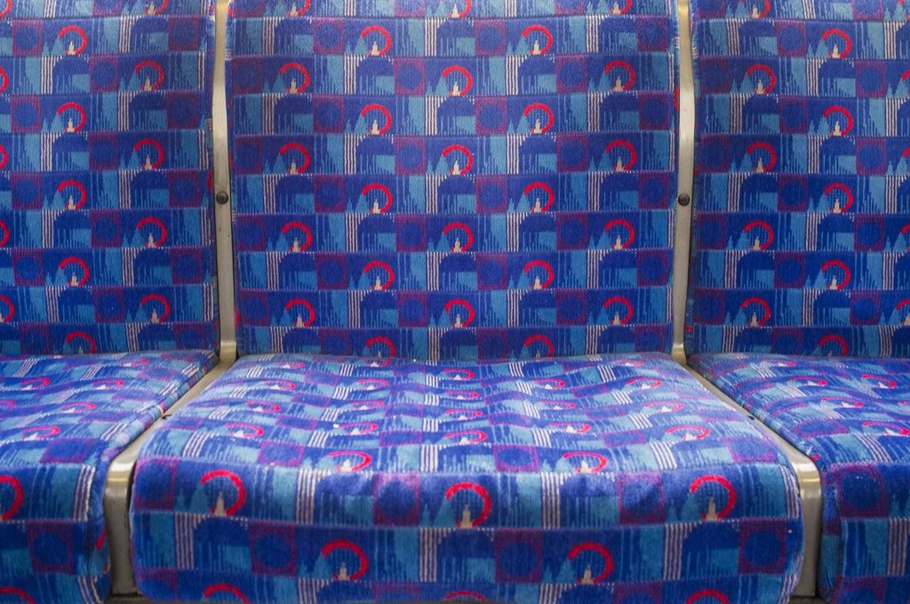

Generic

When I first sketched my designs I imagined these designs being on couches and small pillows. I was inspired by the London Underground Moquette (French for Carpet) designs seen on the seats of trains.
Example of a Tube MoquetteThe challenge was what I should put in my grid design. I couldn't do symbols, just basic shapes. I didn't utilize circles because using a compass was always stressful for me, sometimes it wouldn't come out perfectly, and other times I would rip the paper apart, drawing perfect and precise Hexagons, Octagons and Pentagons felt too complicated. So I ended up with a basic quadrilateral and triangle design, I drew small lines through the triangles and shaded some of the squares with a pencil to make the design not seem dull. The design itself took up a 4x4 space on my 6x8 grid, so it didn't repeat perfectly. but still, I'm quite satisfied with what I was able to execute.